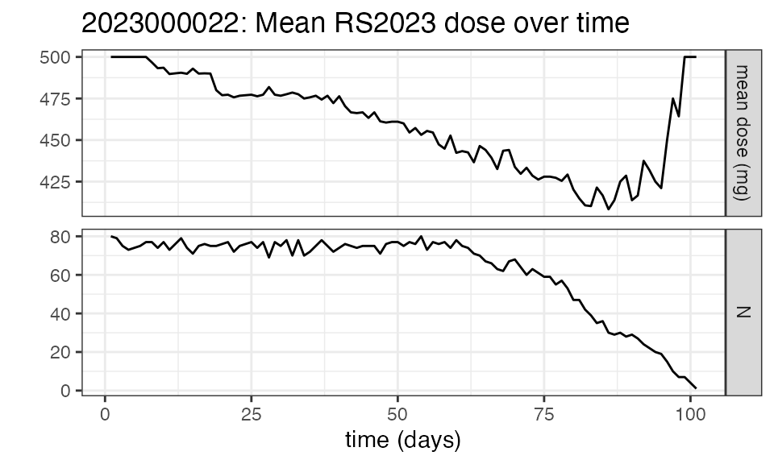

Example: NIF data for a multiple-dose study
multiple-dose-example.RmdOVERVIEW
This vignette walks through the creation of a NIF data set for a prototypical multiple dose study (study ‘RS2023-0022’), as well as some basic exploratory analyses.
The (entirely fictional) raw study data are provided in SDTM format
as part of the NIF package as ‘examplinib_poc’. Actual SDTM data can be
loaded using read_sdtm_sas() of
read_sdtm_xpt() - for further information see the
documentation for the respective functions.
Study design
Study ‘RS2023-0022’ is a single-arm study in which subjects received multiple doses of ‘examplinib’ (substance code ‘RS2023’). The treatment duration is different across subjects. PK sampling was on Days 1 and 8 of the treatment period. The PK sampling schedule was rich in the initial subset of subjects and sparse in the others.
Study SDTM data
SDTM data objects as defined in the NIF package are aggregates of the original SDTM domains together with some metadata. Let’s print the ‘examplinib_poc’ SDTM object for a high-level overview on the data:
examplinib_poc
#> SDTM data set summary
#>
#> Study 2023000022 with 80 subjects providing PC data.
#> SDTM domains: dm, vs, ex, pc, lb
#>
#> Arms:
#> ACTARM ACTARMCD
#> 1 Screen Faillure SCRNFAIL
#> 2 Single Arm Treatment TREATMENT
#>
#> Treatments:
#> EXTRT
#> 1 EXAMPLINIB
#>
#> Specimens:
#> NULL
#>
#> Analytes:
#> PCTEST PCTESTCD
#> 1 RS2023 RS2023
#> 2 RS2023487A RS2023487A
#>
#> Treatment-to-analyte mappings:
#> EXTRT PCTESTCD
#> 1 EXAMPLINIB RS2023
#>
#> Parent-to-metabolite mappings:
#> PCTESTCD_parent PCTESTCD_metab
#> 1 RS2023 RS2023487A
#>
#> Time mappings:
#> noneNote that in the EX domain, the administered drug is given as ‘EXAMPLINIB’ while in PC, the corresponding analyte is ‘RS2023’. The other analyte, ‘RS2023487A’ is a metabolite.
To clearly specify these correlations, the SDTM object contains the
fields examplinib_poc$analyte_mapping and
examplinib_poc$metabolite_mapping. Both need to be
specified when the SDTM data set is created. See the documentation to
add_analyte_mapping() and
add_metabolite_mapping() for details.
For this SDTM object, both have been added already.
CREATE THE NIF DATA SET
Creation of the NIF data set for this study is straightforward. No imputations are needed, and no study-specific fields are created:
nif_poc <- make_nif(examplinib_poc, spec="PLASMA")
#> Data cut-off was set to last observation time, 2001-04-27 14:31:00Of note, the LB domain within this SDTM object contains baseline creatinine data which can be used to calculate the baseline creatinine clearance as an estimate for glomerular filtration rate (eGFR). Please see the below code for details.
In the first step, baseline creatinine is added from ‘LB’, and then the creatinineclearance is calculated using further demographic parameters (sex, age, race, weight). The standard method is Cockcroft-Gault but other methods can be specified.
In the last step, the NIF data set, is cleaned up, keeping only the fields that are commonly used:
nif_poc <- make_nif(examplinib_poc, spec="PLASMA") %>%
add_bl_lab(examplinib_poc$domains[["lb"]], "CREAT", "SERUM") %>%
add_bl_crcl() %>%
compress_nif()
#> Warning: `compress_nif()` was deprecated in nif 0.40.1.
#> ℹ Please use `compress()` instead.
#> This warning is displayed once every 8 hours.
#> Call `lifecycle::last_lifecycle_warnings()` to see where this warning was
#> generated.
#> Data cut-off was set to last observation time, 2001-04-27 14:31:00(In fact, the resulting NIF data set, including baseline creatinine clearance is already included in the package under the name ‘examplinib_poc_nif’.)
In case NIF data sets have been generated independently, they can be
converted into NIF objects using new_nif(), see the
documentation to this function for details.
The resulting NIF object is essentially wrapper around a data frame which has the set of variables expected by NONMEM or other population analysis tools. This becomes visible when the object is converted into a data frame:
nif_poc %>%
as.data.frame() %>%
head()
# REF STUDYID ID USUBJID NTIME TIME TAD ANALYTE AMT RATE
# 1 1 2023000022 1 20230000221010001 0.0 0.00 0.00 RS2023 500 0
# 2 2 2023000022 1 20230000221010001 0.0 0.00 0.00 RS2023 0 0
# 3 3 2023000022 1 20230000221010001 0.0 0.00 0.00 RS2023487A 0 0
# 4 4 2023000022 1 20230000221010001 1.5 1.75 1.75 RS2023 0 0
# 5 5 2023000022 1 20230000221010001 1.5 1.75 1.75 RS2023487A 0 0
# 6 6 2023000022 1 20230000221010001 4.0 4.40 4.40 RS2023 0 0
# DV LNDV MDV CMT EVID DOSE AGE SEX RACE HEIGHT WEIGHT BMI
# 1 NA NA 1 1 1 500 84 0 WHITE 175.6 78 25.29563
# 2 0.0000000 -Inf 0 2 0 NA 84 0 WHITE 175.6 78 25.29563
# 3 0.0000000 -Inf 0 2 0 NA 84 0 WHITE 175.6 78 25.29563
# 4 3.3677257 1.21423765 0 2 0 500 84 0 WHITE 175.6 78 25.29563
# 5 3.8672063 1.35253235 0 2 0 500 84 0 WHITE 175.6 78 25.29563
# 6 0.9731199 -0.02724796 0 2 0 500 84 0 WHITE 175.6 78 25.29563
# ACTARMCD PARENT METABOLITE TRTDY BL_CRCL DTC
# 1 TREATMENT RS2023 FALSE 1 57.37719 2001-01-17 08:24:00
# 2 TREATMENT RS2023 FALSE 1 57.37719 2001-01-17 08:24:00
# 3 TREATMENT RS2023 TRUE 1 57.37719 2001-01-17 08:24:00
# 4 TREATMENT RS2023 FALSE 1 57.37719 2001-01-17 10:09:00
# 5 TREATMENT RS2023 TRUE 1 57.37719 2001-01-17 10:09:00
# 6 TREATMENT RS2023 FALSE 1 57.37719 2001-01-17 12:48:00When the NIF object itself is printed, a summary of the data is shown instead:
nif_poc
# NONMEM input file (NIF) data set with data from 1 studies
# 1344 observations from 80 subjects
# Males: 51, females: 29 (36.2%)
#
# Columns:
# REF, STUDYID, ID, USUBJID, NTIME, TIME, TAD, ANALYTE, AMT, RATE, DV, LNDV, MDV, CMT, EVID, DOSE, AGE, SEX, RACE, HEIGHT, WEIGHT, BMI, ACTARMCD, PARENT, METABOLITE, TRTDY, BL_CRCL, DTC
#
# First rows of NIF data (selected columns):
# ID NTIME TIME TAD ANALYTE AMT DV CMT EVID DOSE
# 1 0 0 0 RS2023 500 NA 1 1 500
# 1 0 0 0 RS2023 0 0 2 0 NA
# 1 0 0 0 RS2023487A 0 0 2 0 NA
# 1 1.5 1.75 1.75 RS2023 0 3.36772568843661 2 0 500
# 1 1.5 1.75 1.75 RS2023487A 0 3.86720626722762 2 0 500
# 1 4 4.4 4.4 RS2023 0 0.973119920231158 2 0 500
# 1 4 4.4 4.4 RS2023487A 0 9.56502537142429 2 0 500
# 1 0 24 0 RS2023 500 NA 1 1 500
# 1 0 48 0 RS2023 500 NA 1 1 500
# 1 0 72 0 RS2023 500 NA 1 1 500
# 1 0 96 0 RS2023 500 NA 1 1 500
# 1 0 120 0 RS2023 500 NA 1 1 500
# 1 0 144 0 RS2023 500 NA 1 1 500
# 1 0 168 0 RS2023 500 NA 1 1 500
# 1 0 191.3 23.3 RS2023 0 0.0362596629478831 2 0 500EXPLORATION
Demographics
A good initial overview on the distribution of baseline parameters,
the administered drugs, analytes, observations, etc. can be inspected
with summary(). Since we have above added baseline eGFR to
the data set, the output also summarizes the number of patients with
normal renal function or impaired renal function:
summary(nif_poc)
# NONMEM input file (NIF) data set summary
#
# Data from 80 subjects across 1 studies:
# STUDYID N
# 2023000022 80
#
# Males: 51, females: 29 (36.2%)
#
# Renal function:
# CLASS N
# mild 37
# moderate 15
# normal 28
#
# Analytes:
# RS2023, RS2023487A
#
# 1344 observations:
# ANALYTE N
# RS2023 672
# RS2023487A 672
#
# Administered drugs:
# RS2023
#
# Dose levels:
# RS2023 N
# 500 80
#
# Subjects with dose reductions
# RS2023
# 12
#
# Treatment duration overview:
# PARENT min max mean median
# RS2023 12 51 38 39For a visual overview of the NIF data set plot() can be
applied to the summary:


Exposure
In this study, all 80 subject received the same dose level:
nif_poc %>%
dose_levels() %>%
kable(caption="Dose levels")| RS2023 | N |
|---|---|
| 500 | 80 |
However, there were subjects with dose reductions, as we can see when filtering the NIF data set for EVID==1 (administrations) and summarizing the administered dose:
| DOSE | n |
|---|---|
| 250 | 175 |
| 500 | 2866 |
Note that in the above code, the nif dataset was first converted into a data frame as the tidyverse verbs (‘filter’, ‘group_by’, ‘summarize’) are not defined for NIF objects. This is a common pattern that will often be used for more complex analyses!
To identify the subjects with dose reductions:
nif_poc %>%
dose_red_sbs()
# [1] 1 10 18 23 29 34 36 48 52 59 65 75Let’s have a plot of the doses over time in these subjects:
nif_poc %>%
as.data.frame() %>%
filter(ID %in% (nif_poc %>% dose_red_sbs())) %>%
filter(EVID==1) %>%
ggplot(aes(x=TIME, y=DOSE, color=as.factor(ID))) +
geom_point() +
geom_line() +
theme(legend.position="none") +
theme_bw()
We see that dose reductions happended at different times during
treatment. Another way of visualizing this is per the
mean_dose_plot() function:
nif_poc %>%
mean_dose_plot()
The upper panel shows the mean dose over time, and we can see that after ~Day 13, the mean dose across all treated subjects drops due to dose reductions in some subjects. To put this into context, the lower panel shows the number of subjects on treatment over time, and we see that most subjects had treatment durations of around 30 days. Note the fluctuations that indicate single missed doses in individual subjects!
PK sampling
The PK sampling time points in this study were:
nif_poc %>%
as.data.frame() %>%
filter(EVID==0) %>%
group_by(NTIME, ANALYTE) %>%
summarize(n=n(), .groups="drop") %>%
pivot_wider(names_from="ANALYTE", values_from="n") %>%
kable(caption="Observations by time point and analyte")| NTIME | RS2023 | RS2023487A |
|---|---|---|
| 0.0 | 160 | 160 |
| 0.5 | 24 | 24 |
| 1.0 | 24 | 24 |
| 1.5 | 160 | 160 |
| 2.0 | 24 | 24 |
| 3.0 | 24 | 24 |
| 4.0 | 160 | 160 |
| 6.0 | 24 | 24 |
| 8.0 | 24 | 24 |
| 10.0 | 24 | 24 |
| 12.0 | 24 | 24 |
From the different numbers of samplings per nominal time point, we see that only a subset of subjects had a rich sampling scheme. Let’s identify those:
nif_poc %>%
rich_sampling_sbs(analyte="RS2023", max_time=24, n=4)
# [1] 8 9 17 18 28 29 38 46 47 48 49 62In this code, the function rich_sampling_sbs() receives
as input the analyte of interest, the time interval across which the
number of sanmples is evaluated, and the minimum number of samples to
qualify the schedule as rich.
Plasma concentration data
Let’s plot the individual and mean plasma concentration profiles on Day 1 for the parent, RS2023, and the metabolite, RS2023487A:
temp <- nif_poc %>%
filter(ID %in% (nif_poc %>%
rich_sampling_sbs(analyte="RS2023", n=4, max_time=24)))
temp %>% plot(points=T)
For the sampling on Day 1 only:
temp <- temp %>%
filter(TIME<=24)
temp %>% plot(analyte="RS2023", points=T, administrations=T, max_x=15)

nif_poc %>%
filter(ID %in% (nif_poc %>%
rich_sampling_sbs(analyte="RS2023", n=4, max_time=24))) %>%
plot(nominal_time=F, min_x=192)
The above code showcases some options for the plot()
function:
- In addition to the line graphs, the individual data points can be
shown with the option
points=TRUE. -
min_xandmax_xcan be used to define a speficic time interval. - In the first 2 graphs, the analyte (RS2023) is specifically selected. In the third graph, no analyte is specified, and both analytes are plotted.
-
nonminal_time=TRUEselects the nominal time for the x axis. The default for individual curves isnominal_time=FALSE, i.e., the actual time is used. Note that for mean profiles as shown in plot 2, nominal time is used automatically for the averaging. - The option
y_scale="log"can be used to plot the data on a log concentration scale.